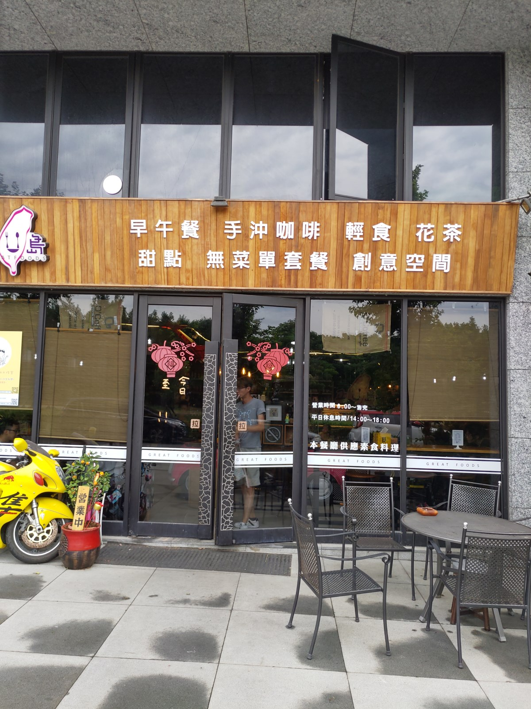
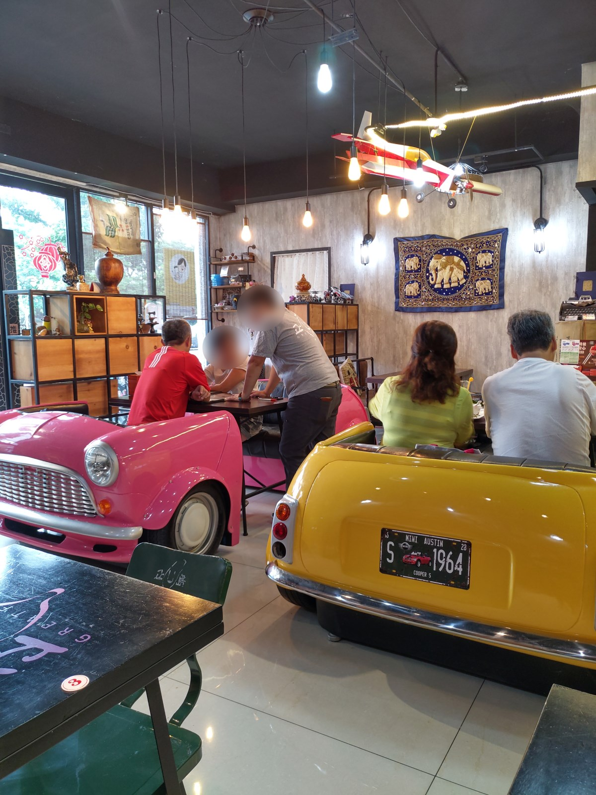
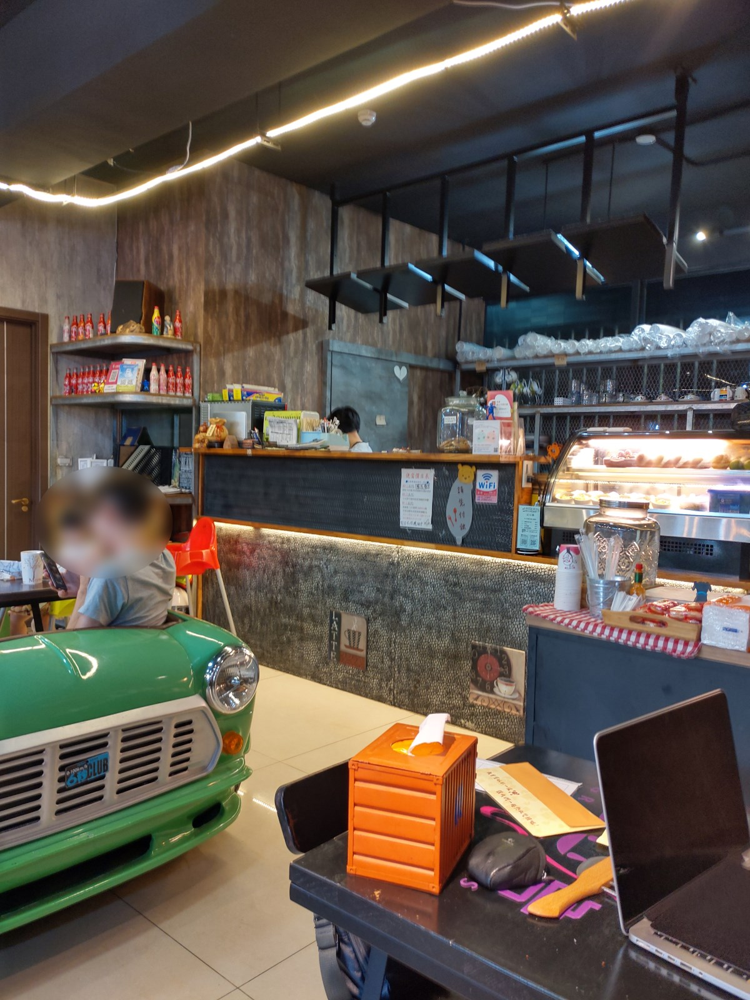
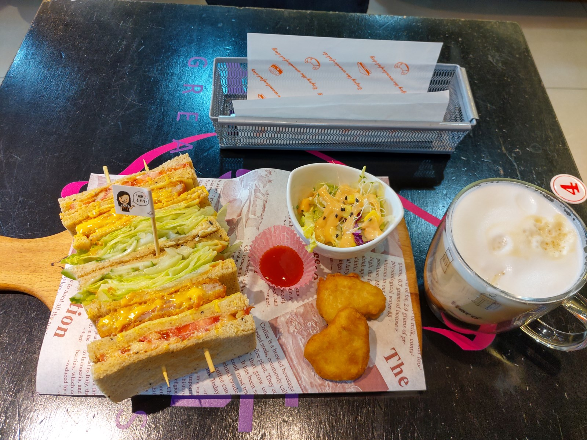
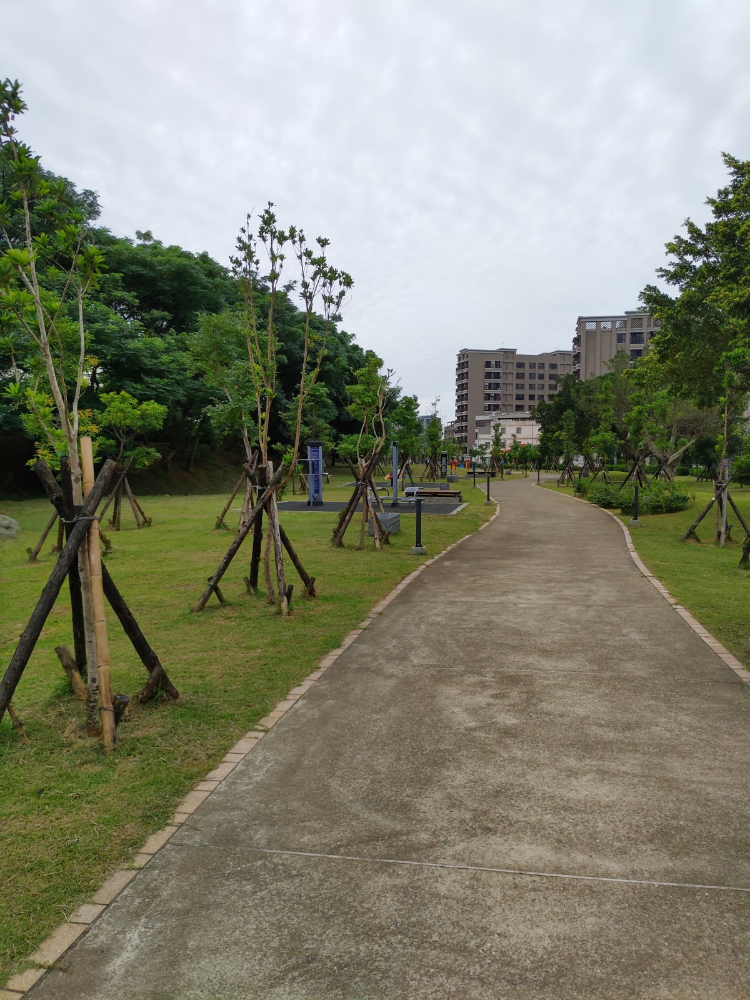

[桃園高鐵] 正U島
| 餐廳名稱: | 正U島 |
|---|---|
| 地 址: | 桃園市大園區大智路103號 |
| 營業時間: | 週一 ~ 週五 8:00~14:30 17:30~20:00 |
| 週六 ~ 週日 8:00~20:00 | |
| 電 話: | 03 287 1100 |
今天一大早要去桃園高鐵接人，特別忍著餓肚子提早到，要去踩雷一間似乎Google評分頗高的早餐店
- 正U島。
來到附近，意外地覺得環境不錯，有公園，好停車，離桃園高鐵站開車5分鐘吧。 
服務態度不錯，感覺是一家人全都來幫忙。當天是假日，還好早到，中間三個汽車沙發早就客滿了，其他位子陸陸續續也客滿了， 看起來是最好要訂位，特別是汽車沙發區。  
這個菜單照片是跟官網借的，想必老闆不會介意。另外還有一本大本的 Menu ，有附照片，可能
好選一點，官網的照片區都有。

選了輕量套餐裏面的總匯。套餐的飲料是紅茶，加錢升級成咖啡。味道還行，炸物很難失敗， 整體分數營造的不錯。 
結束用餐後，走到外面，看這些綠色景物，真是心曠神怡啊。 
回到家後，研究了一下它的官網，還挺有趣的，似乎平時有在打造簡單的電動汽車。 6月底，又增加晚餐熱炒時段，非常的精力充沛。各位到桃園高鐵附近，都可以 晃過來，在這裡補充一下精力。